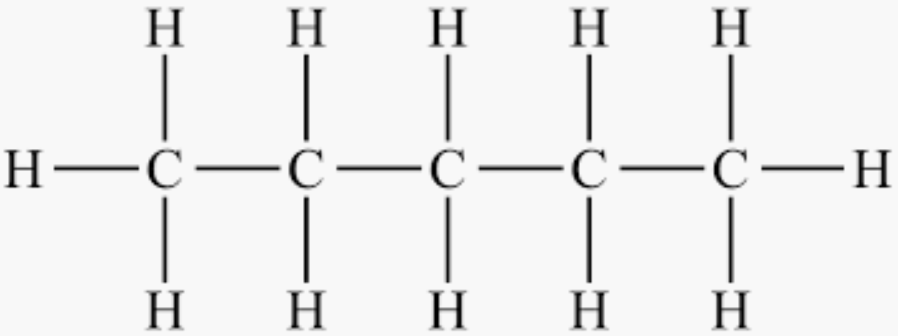
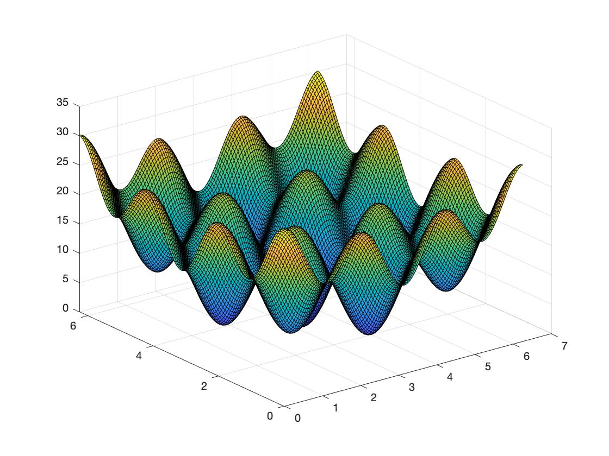
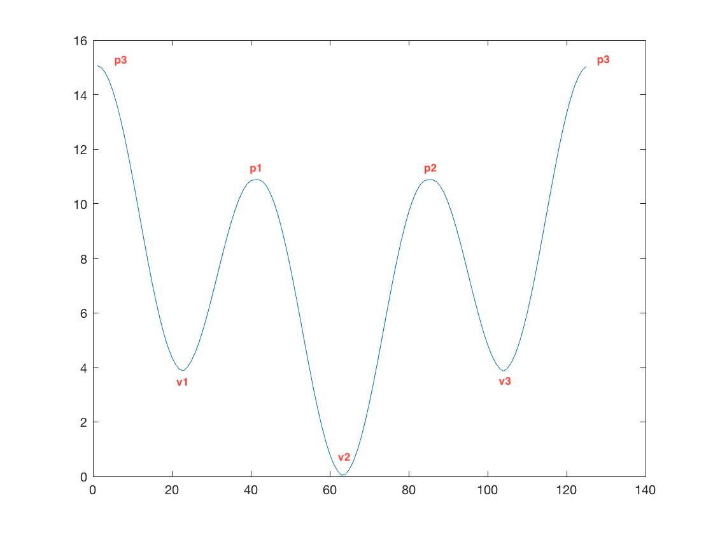
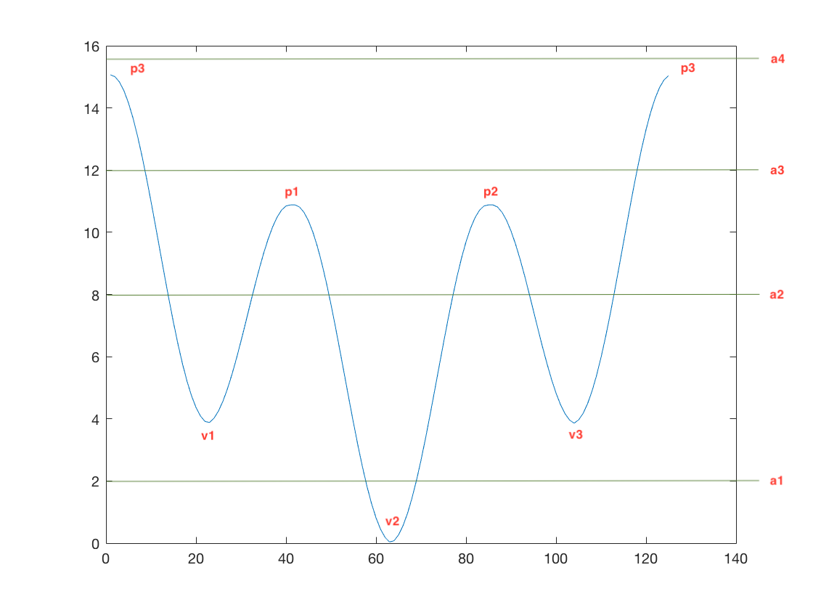
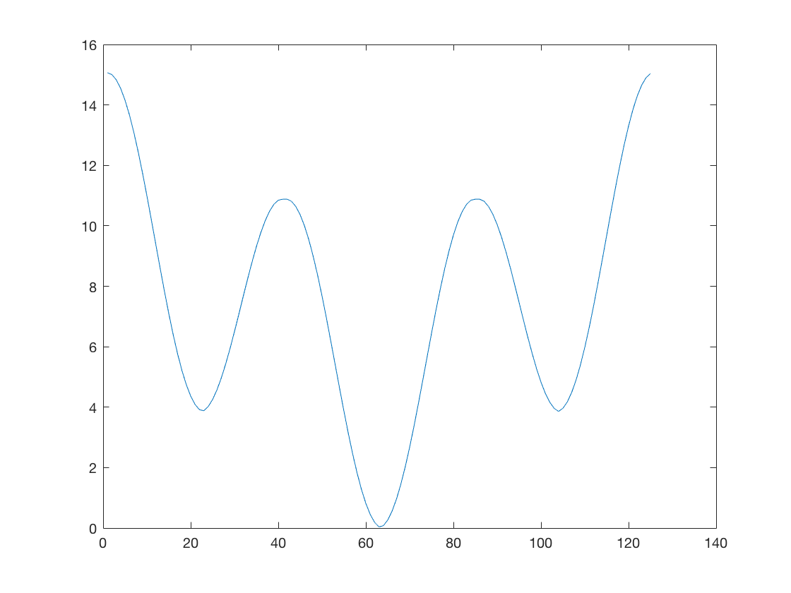
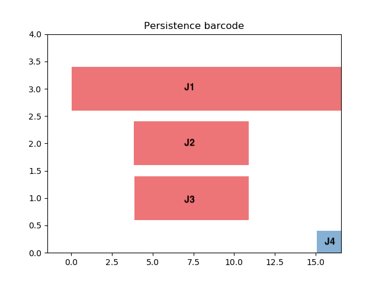
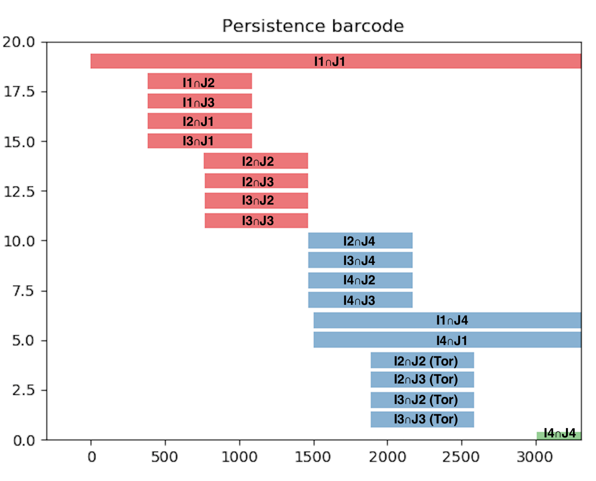
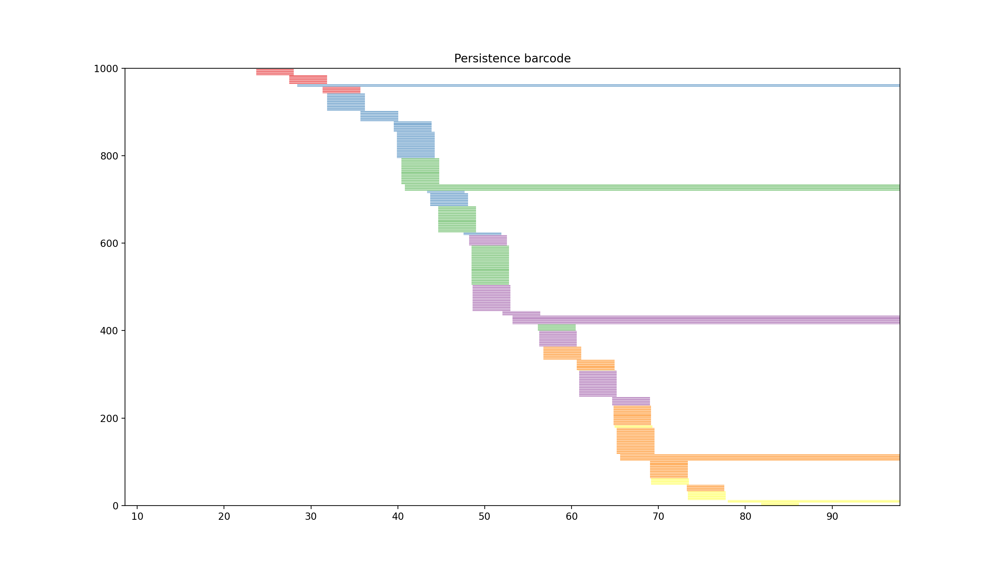

class: center, middle, titlepage count: false # Algebraic Topology for Chemists ## Joshua Mirth ### NSF-DELTA Project --- class: center, middle, titlepage ## Collaborators: .center[ ] .center[ ] --- # Outline I. Alkane Energy Landscapes II. Chain Complexes and Homology III. The Morse Complex IV. Persistent Homology V. Künneth Formulae VI. Persistent Homology of Alkanes --- class: center, middle, titlepage count: false # Chemistry --- ## Alkane Energy Landscapes .figuresplit[ Chemical diagram of pentane:  ] .textsplit[ Energy landscape of pentane:  ] --- class: center, middle, titlepage count: false # Algebraic Topology --- # Homology A _chain complex_ `\(C_\bullet\)` is a sequence of vectors spaces and linear maps: `$$ \cdots \to C_2 \overset{\partial_2}\to C_1 \overset{\partial_1}\to C_0 \overset{\partial_0}\to C_{-1} \overset{\partial_{-1}}\to C_{-2} \to \cdots $$` such that `\(\partial_i \circ \partial_{i+1} = 0\)`. -- "If I could only understand the beautiful consequence following from the concise proposition `\(\partial^2 = 0\)`." - Henri Cartan -- The `\(n\)`-dimensional homology of a chain complex is the quotient `$$ H_n(C_\bullet) := \frac{\mathrm{ker}\partial_n}{\mathrm{im}\partial_{n+1}} $$` Homology is an efficient summary of the data of the chain complex. --- # Morse Complex Take `\(M\)` a manifold and `\(f\)` a smooth, real-valued function without degenerate critical points (a _Morse_ function). A _critical point_ `\(p \in M\)` is a point where the derivative `\(\nabla f(p) = 0\)`. The real number `\(f(p)\)` is a _critical value_. The _Hessian_ of `\(f\)` is the matrix of second partial derivatives, and the number of positive eigenvalues this has is the _index_ of `\(f\)`. We'll build a chain complex from this data by making `\(C_i\)` the vector space generated by the set of critical points of index `\(i\)`. -- **Theorem:** Morse homology is independent of f and agrees with singular homology. --- ## Example on the circle `\(M = \mathbb{R} / 2\pi\mathbb{Z}\)` (an interval with periodic boundary conditions), and `\(f\)` pictured here: .fiftyfiftyleft[  ] .fiftyfiftyright[ Minima are index 0 and maxima are index 1, giving: `$$ C_\bullet(f) = \cdots 0 \overset{\partial}\to \Bbbk^3 \overset{\partial}\to \Bbbk^3 \overset{\partial}\to 0 \cdots $$` `\(\partial p\)` is the critical points that can be reached by moving down from `\(p\)`: `$$ \partial m_1 = \partial m_2 = \partial m_3 = 0 $$` `$$ \partial p_1 = v_2 - v_1 \quad \partial p_2 = v_3 - v_2 \quad \partial p_3 = v_1 - v_3 $$` The homology groups are `$$ H_0(C_\bullet(f)) \cong \Bbbk \text{ and } H_1(C_\bullet(f)) \cong \Bbbk $$` so the Betti numbers are `\(\beta_0 = \beta_1 = 1\)`. ] --- ## Filtered Morse complexes Only looking at critical points with `\(f(p) \leq a \)` naturally filters the Morse complex. .fiftyfiftyleft[  ] .fiftyfiftyright[ `$$ C^4_\bullet(f) = \cdots \to 0 \to \Bbbk^3 \to \Bbbk^3 \to 0 $$` `$$ \uparrow $$` `$$ C^3_\bullet(f) = \cdots \to 0 \to \Bbbk^2 \to \Bbbk^3 \to 0 $$` `$$ \uparrow $$` `$$ C^2_\bullet(f) = \cdots \to 0 \to 0 \to \Bbbk^3 \to 0 $$` `$$ \uparrow $$` `$$ C^1_\bullet(f) = \cdots \to 0 \to 0 \to \Bbbk \to 0 $$` ] --- ## Filtered Morse complexes Only looking at critical points with `\(f(p) \leq a \)` naturally filters the Morse complex. .fiftyfiftyleft[ ] .fiftyfiftyright[ Each complex has homology: `$$ H_1(C_\bullet^4(f)) \cong \Bbbk \quad H_0(C_\bullet^4(f)) \cong \Bbbk $$` `$$ \uparrow $$` `$$ H_1(C_\bullet^3(f)) \cong 0 \quad H_0(C_\bullet^3(f)) \cong \Bbbk $$` `$$ \uparrow $$` `$$ H_1(C_\bullet^2(f)) \cong 0 \quad H_0(C_\bullet^2(f)) \cong \Bbbk^3 $$` `$$ \uparrow $$` `$$ H_1(C_\bullet^1(f)) \cong 0 \quad H_0(C_\bullet^1(f)) \cong \Bbbk $$` ] --- ## Filtered Morse complexes Only looking at critical points with `\(f(p) \leq a \)` naturally filters the Morse complex. .fiftyfiftyleft[ <img src="V_butane_periodic_barcodes.png" width=90% height=90% /> ] .fiftyfiftyright[ Each complex has homology: `$$ H_1(C_\bullet^4(f)) \cong \Bbbk \quad H_0(C_\bullet^4(f)) \cong \Bbbk $$` `$$ \uparrow $$` `$$ H_1(C_\bullet^3(f)) \cong 0 \quad H_0(C_\bullet^3(f)) \cong \Bbbk $$` `$$ \uparrow $$` `$$ H_1(C_\bullet^2(f)) \cong 0 \quad H_0(C_\bullet^2(f)) \cong \Bbbk^3 $$` `$$ \uparrow $$` `$$ H_1(C_\bullet^1(f)) \cong 0 \quad H_0(C_\bullet^1(f)) \cong \Bbbk $$` ] --- ## Filtered Morse complexes Only looking at critical points with `\(f(p) \leq a \)` naturally filters the Morse complex. .fiftyfiftyleft[ <img src="V_butane_periodic_barcodes.png" width=90% height=90% /> ] .fiftyfiftyright[ **Persistent Homology** consists of * Computing the homology at each filtration level, and * Tracking how the homology at each step maps to the next one. Formally, the persistent homology `\(PH_n(C_\bullet^*(f))\)` is a graded `\(\Bbbk[x]\)`-module. A barcode records this data simply. It is the filtered equivalent of Betti numbers. ] --- class: center, middle, titlepage count: false # Applications --- # Energy Landscape of Alkanes .fiftyfiftyleft[ The energy landscape of butane is the function `\(f(\phi)\)` we've been looking at:  ] .fiftyfiftyright[ The energy function for the alkane with `\(n+3\)` carbon atoms is `\(F_n = f(\phi_1)+f(\phi_2)+ \cdots + f(\phi_n)\)`. We would like to know the persistent homology of _all_ of the alkane energy landscapes, as that would tell us essentially all topological information about the landscape. If the topology of the landscape affects the physics of the molecule, that should be detectable from persistence. **Theorem:** The filtered Morse complex of `\(F\)` is `$$ C_\bullet^*(F) \cong C_\bullet^*(f) \otimes_g \cdots \otimes_g C_\bullet^*(f). $$` ] --- # Künneth Formulae The _Künneth formula_ for (regular) homology says that there is a short exact sequence: `$$ 0 \to \bigoplus_{i+j=n} H_i(A_\bullet) \otimes H_j(B_\bullet) \to H_n(A_\bullet \otimes B_\bullet) \to \bigoplus_{i+j=n} \mathrm{Tor}(H_i(A_\bullet),H_j(B_\bullet)) \to 0 $$` (Exact means that the image of the map entering is equal to the kernel of the map leaving at each step.) For homology over vector spaces, `\(\mathrm{Tor}(H_i(A_\bullet),H_j(B_\bullet)) = 0\)`, so `$$ \bigoplus_{i+j=n} H_i(A_\bullet) \otimes H_j(B_\bullet) \cong H_n(A_\bullet \otimes B_\bullet) $$` -- **Example:** The homology of the circle `\(\mathbb{S}^1\)` is `\(H_0(\mathbb{S}^1) \cong \Bbbk\)` and `\(H_1(\mathbb{S}^1) \cong \Bbbk\)`, so the homology of the `\(n\)`-dimensional torus `\(\mathbb{T}^n = (\mathbb{S}^1)^n\)` is `$$ H_k(\mathbb{T}^n) \cong \Bbbk^{n \choose k} . $$` --- # Persistent Künneth formula There is a natural short exact sequence of graded `\(\Bbbk[x]\)` modules `$$ 0 \to \bigoplus_{i+j=n} \left( PH_i(X) \otimes PH_j(Y)\right) \to PH_n(X \otimes_g Y) \to \bigoplus_{i+j=n} \mathrm{Tor}(PH_i(X),PH_{j-1}(Y)) \to 0 $$` and the barcodes are given by `\(\mathrm{bcd}_n(X \otimes_f Y) = \)` `$$ \bigsqcup_{i+j=n} \left\{ (l_J + I) \cap (l_I + J) \mid I \in \mathrm{bcd}_i(X), J\in \mathrm{bcd}_j(Y) \right\} \sqcup \bigsqcup_{i+j=n} \left\{ (r_J + I) \cap (r_I + J) \mid I \in \mathrm{bcd}_i(X), J\in\mathrm{bcd}_{j-1}(Y) \right\} . $$` (Here `\(l\)` and `\(r\)` are the left and right endpoints of the interval.) This result is from [GP] --- ## Example: Persistent Homology of Pentane .figuresplit[  ] .textsplit[  ] --- .center[  The complexity grows rapidly! There are `\((6^n + 2^n)/2\)` bars with `\(n+3\)` carbons. ] --- class: titlepage count: false # Thank you! ###Questions? # References: .source[ * [GP] Hitesh Gakhar and Jose Perea, "Künneth Formulae in Persistent Homology", arXiv preprint arXiv:1910.05656, 2019. * [Ha] Allen Hatcher, _Algebraic Topology_, <a href="http://pi.math.cornell.edu/~hatcher/AT/ATpage.html">http://pi.math.cornell.edu/~hatcher/AT/ATpage.html"</a>. * [Jo] Jurgen Jost, _Riemannian Geometry and Geometric Analysis_, Springer, _Universitext_, 7th ed., 2017. * [*] NSF DELTA Thrust 2 Group, "Energy Landscape and Persistent Homology: an analysis of the `\(n\)`-alkanes", in preparation. ]